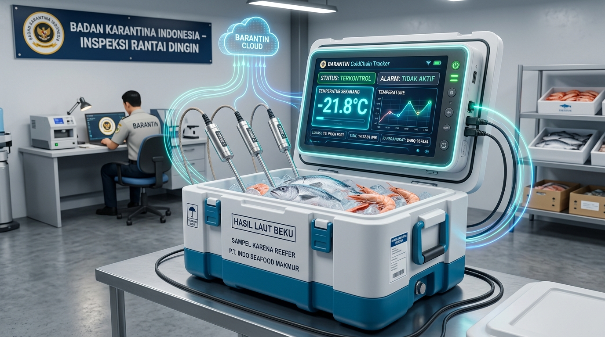
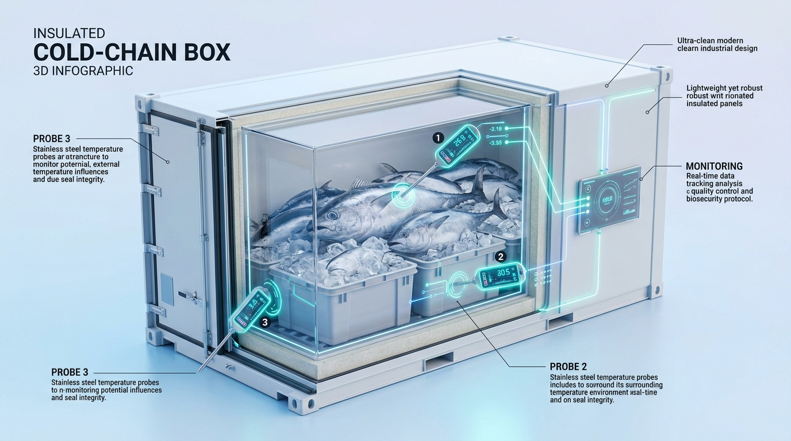

// INOVASI KARANTINA CERDAS • SMART BORDER
QIC 2026
MONITORING RANTAI DINGIN BERBASIS IOT & AI
Pengawasan suhu komoditas beku maritim secara real-time & zero-data-loss. Menjamin standar biosekuriti dan integritas mutu Badan Karantina Indonesia.
3X DS18B20 SENSORS
ESP32 FREERTOS
MICROSD FAT32 BUFFER
AI ISOLATION FOREST
0%
// DATA LOSS (SD BUFFER)
3 TITIK
// SENSOR SPASIAL ARRAY
15-20 MNT
// DETEKSI GRADIENT DINI
< 5 MNT
// CLEARANCE BARANTIN

UNIT QGUARD-001 // ONLINE
T1 CORE: -21.8°C // CODEX PASSED
// KORIDOR MARITIM
BITUNG → SURABAYA
// MEAN KINETIC TEMP
-20.9°C (OPTIMAL)
// STATUS DISPOSISI
JALUR HIJAU
// 01 HARDWARE SPECIFICATION
SUSUNAN 3 TITIK SENSOR TRI-PROBE ARRAY
Pengukuran langsung ke inti komoditas, buffer es, dan perimeter wadah untuk mendeteksi gradien suhu 15–20 menit lebih awal.

3D CROSS-SECTION // WADAH BERPENDINGIN & IKAN TUNA
// T1 CORE MEAT
-21.8°C
SENSOR INTI KOMODITAS (DEPTH 12 CM)
Tertancap di pusat daging ikan tuna untuk memastikan titik beku mutlak (≤ -18.0°C) selalu terjaga.
// T2 THERMAL BUFFER
-20.4°C
THERMAL BUFFER LAPISAN ES CURAH
Memantau ketahanan es pendingin di sekeliling produk selama pelayaran antar-pulau.
// T3 PERIMETER SEAL
-18.6°C
DETEKSI DINI CELAH & KEBOCORAN PINTU
Mendeteksi kenaikan suhu eksternal dan bukaan pintu sebelum merusak mutu inti komoditas.
// 02 MISSION SIMULATION
UJI SIMULASI RISIKO TERMAL & MULTIVARIATE AI
Uji respons telemetri sensor spasial dan algoritma keputusan resmi inspeksi Barantin secara interaktif.
Telemetri Susunan Tri-Probe Array
KONDISI: TERJAGA (OPTIMAL)
T1 (Inti Daging Tuna)
-21.8°C
T2 (Tengah Wadah / Es)
-20.4°C
T3 (Dekat Pintu / Udara)
-18.6°C
Pintu Wadah (MC-38)
🔒 Rapat (Tertutup)
Guncangan (MPU6050)
0.12 g (Normal)
Jaringan Maritim
⚓ Selat Makassar (SD Buffer)
Analisis AI & Disposisi Barantin
CODEX COMPLIANT
Mean Kinetic Temperature (MKT)
-20.9°C
Batas Kritis: ≤ -18.0°C (Lolos Kinetika)
Skor Anomali AI
0.08 / 1.00
Kategori: Normal (Rantai Dingin Aman)
REKOMENDASI SISTEM INSPEKSI BARANTIN:
JALUR HIJAU (PASSED)
Suhu inti -21.8°C konsisten aman. Kargo memenuhi standar Codex CAC/RCP 8-1976 dan langsung lolos Jalur Hijau.
// 03 LOGISTICS CORRIDOR
PENGAWASAN MARITIM BITUNG → SURABAYA
Validasi telemetri rantai dingin terpadu dari pelabuhan asal hingga pos inspeksi perbatasan karantina.
ETAPE 01: PELABUHAN ASAL BITUNG
Insersi Tri-Probe & Verifikasi Titik Beku
Insersi 3 probe sensor pada komoditas ikan tuna dan buffer es sebelum segel karantina dipasang di Pelabuhan Bitung.
Protokol:
Verifikasi Pre-Cooling & Segel Karantina
Target Suhu Inti:
≤ -20.0°C
Perangkat Aktif:
ESP32 + DS18B20 Array + RTC DS3231
// SNAPSHOT TELEMETRI ETAPE
// T1 INTI DAGING
-22.4°C
// T2 TENGAH / ES
-21.1°C
// T3 PINTU WADAH
-19.5°C
// INTEGRITAS DATA
100% Tercatat
// 04 TECHNICAL MATRIX
METODE KONVENSIONAL VS PROTOKOL Q-GUARD
Standar pemantauan aktif terhubung menggantikan pencatatan pasif USB konvensional.
// LEGACY SPEC
DATALOGGER PASIF USB
-
1 TITIK UKUR DEKAT PINTU
Tidak mengukur suhu inti daging yang sebenarnya.
-
DATA BARU DI-DUMP PASCA-TIBA
Kerusakan baru disadari saat barang sudah tiba rusak di tujuan.
-
SERING FALSE ALARM SAAT DEFROST
Kenaikan suhu udara sesaat memicu penolakan kargo yang keliru.
// MISSION PROTOCOL
IOT CERDAS + MULTIVARIATE AI
-
SUSUNAN 3 PROBE SPASIAL
Pantau langsung inti komoditas, lapisan es, dan pintu secara simultan.
-
BUFFER MICROSD (0% DATA LOSS)
Penyimpanan otomatis saat berada di laut lepas tanpa sinyal seluler.
-
FILTER AI ISOLATION FOREST
Membedakan siklus defrost wajar vs kompresor pendingin rusak nyata.
// 05 SYSTEM ARCHITECTURE
EMPAT PILAR TEKNOLOGI Q-GUARD
Desain berlapis dari pembacaan sensorik di boks kargo hingga inspeksi digital Barantin.
01
01 // EDGE TRI-PROBE SENSING
ESP32 membaca 3 sensor suhu digital DS18B20 anti-air, GPS NEO-6M, serta akselerometer MPU6050 untuk deteksi guncangan dinamis.
02
02 // OFFLINE-FIRST MICROSD BUFFER
Penyimpanan lokal otomatis saat blankspot di laut lepas. 100% data disinkronkan kembali saat bersandar di dermaga tujuan.
03
03 // AI ANOMALY & ARRHENIUS
Model AI Isolation Forest membedakan fluktuasi defrost wajar, dan kinetika MKT menghitung akumulasi degradasi biokimia.
04
04 // RAPID CLEARANCE < 5 MNT
Penerbitan surat disposisi Jalur Hijau resmi dan rekam jejak audit digital terenkripsi SHA-256 untuk petugas Barantin.